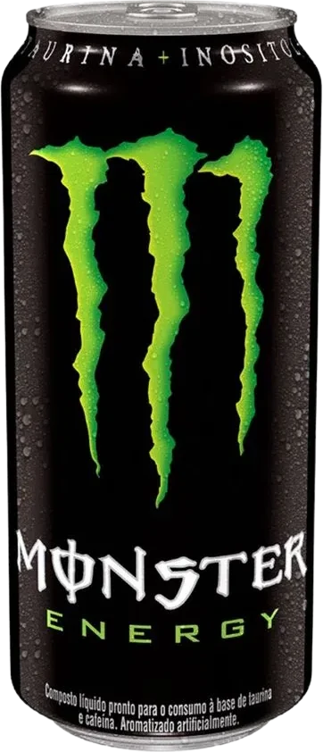

DESIGN COM INTENÇÃO. CÓDIGO COM PROPÓSITO.
ESTÚDIO DE TECNOLOGIA CRIATIVA / BRASIL
Ideias que
ganham
altitude.
Sites que marcam.
Sistemas que resolvem.
Tecnologia que
faz
seu negócio avançar.
Menos promessa.
Mais experiência.
Entre, explore, interaja.
As demonstrações mostram
o que o
código pode fazer.
Fini Candyverse

CONCEPT / BRAND EXPERIENCEMonster Energy
Conceitos independentes. Demonstrações reais.
Fini e Monster são estudos de interface, sem vínculo comercial
com as marcas.
O seu desafio.
Nosso ponto
de partida.
Para negócios que precisam se apresentar melhor, organizar a operação ou conectar o que hoje está separado.
01
Sites & experiências
Sites institucionais, landing pages e experiências digitais que apresentam seu negócio com clareza e tornam o próximo clique natural.
Explore uma experiência
02
Sistemas personalizados
Estoque, caixa, controles internos e sistemas web organizados em torno da rotina da sua equipe. O fluxo vem antes da ferramenta.
Conheça o laboratório de sistemas
03
Automação & integrações
Conectamos etapas e ferramentas para reduzir tarefas manuais. Integrações e viabilidade são definidas a partir dos sistemas que sua empresa já usa.
Converse sobre sua operação
04
IA & AltriX
Atendimento e automação com a AltriX. Explore a demonstração local e converse sobre as possibilidades de uma integração real para seu negócio.
Conheça a AltriX
Um projeto pode reunir várias especialidades.
A solução
começa pelo que você precisa.
INTELIGÊNCIA APLICADA / ALTRIX
Conversas que
viram caminhos.
Atendimento, organização e automação em uma mesma direção: deixar sua equipe mais livre para cuidar do que importa.
Demonstração local, com respostas predefinidas.Nenhuma mensagem é enviada ou armazenada.
Vamos entender sua rotina
e encontrar o próximo passo.
Entender → Organizar → Conectar
Respostas rápidas, atendimento 24/7 e integrações são possibilidades de um projeto conectado, sujeitas ao escopo e à viabilidade. Esta prévia não executa essas integrações.
Uma boa ideia
merece um
bom processo.
Vamos dar o primeiro passo
-
01
OBJETIVOS + ESCOPO
Entender
Primeiro, as perguntas certas.
Conversamos sobre seu negócio, seu público e o que precisa funcionar melhor. Objetivos claros orientam todas as decisões.
-
02
ESTRUTURA + DIREÇÃO VISUAL
Desenhar
Dar forma ao que faz sentido.
Conteúdo, navegação e interface ganham forma. Você participa das escolhas antes de avançarmos para o desenvolvimento.
-
03
CÓDIGO + INTEGRAÇÕES
Construir
Transformar direção em interação.
Desenvolvemos o projeto em etapas visíveis. Você acompanha o avanço e experimenta o que está sendo criado.
-
04
VALIDAÇÃO + REFINAMENTO
Testar
Olhar de perto. Em cada tela.
Revisamos navegação, desempenho e acessibilidade. Testamos os fluxos definidos e refinamos a experiência em diferentes dispositivos.
-
05
CONFIGURAÇÃO + ORIENTAÇÃO
Entregar
Pronto para fazer parte da rotina.
Publicamos ou instalamos conforme o combinado, configuramos o necessário e orientamos sua equipe para começar.
-
06
SUPORTE + PRÓXIMOS PASSOS
Acompanhar
A entrega não encerra a conversa.
Acompanhamos dúvidas iniciais e correções ligadas ao projeto entregue. Novas necessidades são avaliadas e combinadas à parte.
Tecnologia
sem letras
miúdas.
Confiança não se pede.
Se constrói, com transparência.
UMA FORMA DE TRABALHAR.
-
01
↗
Você acompanha antes de pagar pela entrega final.
Acompanhe o desenvolvimento e visualize o projeto antes da conclusão. As etapas e condições de pagamento são combinadas na proposta.
-
02
↗
Veja demonstrações reais dos nossos projetos.
Explore as experiências do portfólio, teste as interfaces e conheça o trabalho antes de começar. Ver projetos ↗
-
03
↗
Escopo, prazo e valor definidos antes do início.
O que será entregue fica claro desde o começo. Qualquer necessidade fora do combinado é apresentada para aprovação antes de uma cobrança adicional.
-
04
↗
Instalação e configuração inclusas quando necessário.
Sistemas locais de estoque, caixa e controle interno podem ser configurados no computador ou na rede da empresa, remotamente ou presencialmente quando combinado.
-
05
↗
Suporte após a entrega.
Dúvidas iniciais, configuração e correções relacionadas ao projeto entregue contam com acompanhamento. Condições e período de suporte ficam definidos na proposta.
Tudo começa
com uma conversa.
O que você quer colocar no mundo?
Conte sua ideia. A gente
constrói
o próximo passo com você.